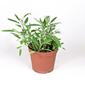
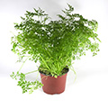

Bylinky sú dodávané v plastových kvetináčoch o objeme 1,5 litra. Cena je 2,50€ za 1 kus. Sú vhodné pre domáce pestovanie, ideálne v kuchyni kde budú vždy poruke. Kvetináč je naplnený substrátom ktorý dodá bylinkám výživu po dobu niekoľkých mesiacov. Pri dlhodobom pestovaní je dobré podporiť rasť prihnojením.
Bazalka |
Tymian |
Šalvia |
Majorán |
Trebuľka |
||||
Koriander |
Mäta |
Medovka |
Saturejka |
Rozmarín |
Pre gastronómiu dodávame aj rezané bylinky na váhu. Minimálny odber 50g.